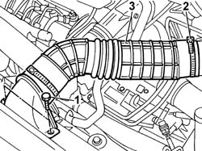
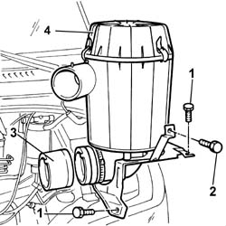
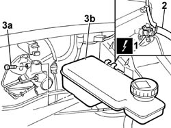

3330C30 BRAKE FLUID RESERVOIR - R + R AND WASH INSIDE
- Path
- Procedures > 33 BRAKING SYSTEM > 3330 HYDRAULIC BRAKING SYSTEM > 3330C BRAKE PUMP, RESERVOIR AND LOAD PROPORTIONING VALVE > 3330C30 BRAKE FLUID RESERVOIR - R + R AND WASH INSIDE
- Kind
- repair procedure (removal / refitting; the operation number is the code)
- Applies to
- all engines; all production periods
- Interactive page
- https://sloeber94.github.io/elrnDB-fDct/en/#/244001105
Applies to: all engines; all production periods
 Removing
Removing
 Refitting
Refitting- Position the vehicle on a lift.
- Remove the protective cap for the bleed valve on one of the front brake calipers.
- Connect the recovery device (pipe and reservoir) to the bleed valve on the brake caliper.
- Operate the brake pedal until the brake/clutch fluid reservoir is drained.
1. Undo the bolts fixing the cold air intake to the upper crossmember.
2. Disconnect the intake hose from the air filter casing.
3. Remove the cold intake and intake hose assembly from the engine compartment.

Applies to: all engines; all production periods
1. Undo the bolt fixing the air filter casing mounting bracket.
2. Undo the bolt fixing the air filter casing to the bracket joined to the windscreen washer fluid reservoir.
3. Disconnect the turbocharger air intake hose from the air filter casing.
4. Remove the air filter casing complete with mounting brackets from the engine compartment.

Applies to: all engines; all production periods
1. Disconnect the electrical connection for the brake/clutch fluid level sensor.
 | Description | Connector |
|---|---|---|
1 | Brake fluid level sensor (switch) | K025 |
2. Disconnect the brake pump supply pipe.
3. Undo the fixing bolt (3a) and remove the brake/clutch fluid reservoir.

Applies to: all engines; all production periods
Refitting
Removing- Check that the reservoir is not damaged.
- Place the reservoir in position and secure it using the bolt.
- Connect the brake pump supply pipe.
- Connect the electrical connection for the brake/clutch fluid level sensor.
| Description | Connector |
|---|---|---|
. | Brake fluid level sensor (switch) | K025 |
- Place the air filter casing in the housing, connect the air hose and tighten the fixing bolts.
- Position the engine air intake hose, connect it to the filter casing and secure it using the bolts.
Op. 0010T65 HYDRAULIC BRAKE SYSTEM BLEED AIR
- Remove the vehicle from the lift.